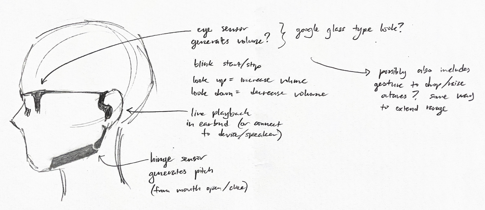
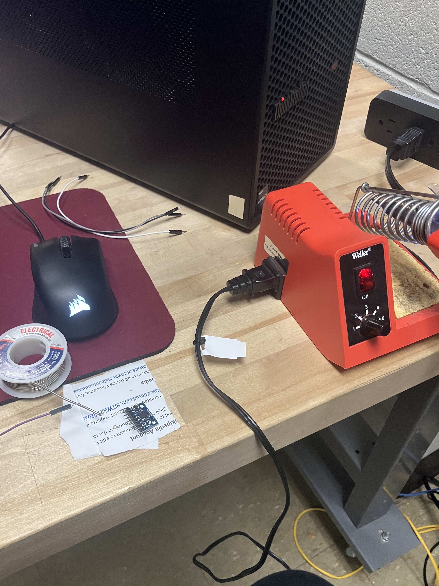
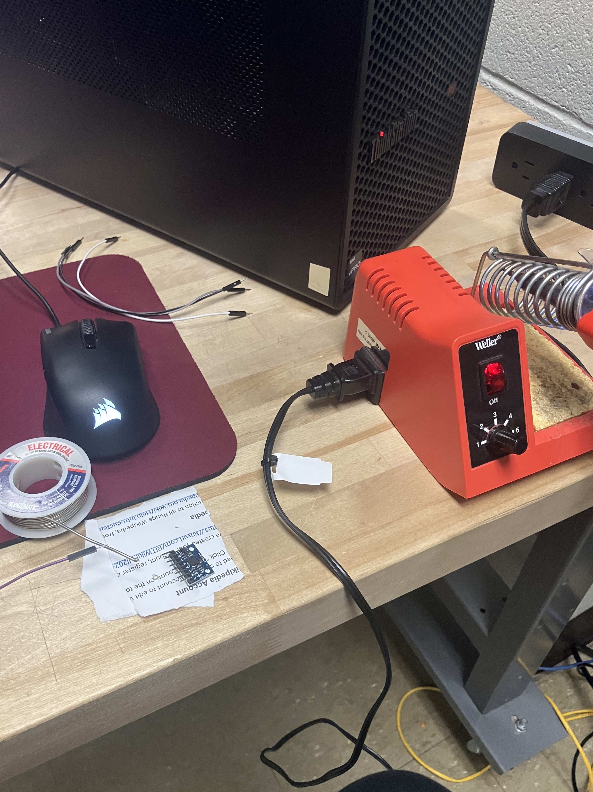

Fall 2024
Aria
Aria is a wearable, touch-free instrument that generates sound and visuals from head movement. This project was a tangible example of product design. We created a 3D mockup of a proposed design, and a fully-functioning Arduino-based prototype.
My main responsibility was putting together the hardware that we could plug into TouchDesigner.
Concept Sketches
This project focused on accessibility related to music, so we could only use facial gestures—no hands, no arms. To brainstorm, my group came up with a list of ideas, did sketch sprints, and compared concepts. We opted for one of my ideas: a wearable headpiece-instrument.

Building the Arduino
This project was my first time ever working with hardware, so I began by researching various Arduino boards and how they work, as well as what additional pieces we would need and how those work. The New Media Design program at RIT already had a selection of Arduino Unos, so I searched specifically for Uno-compatible parts.
We managed to get the parts ordered, assembled, and functioning in less than a week.
I even had the opportunity to learn to solder, as the accelerometer pins came separately from the board. I managed to get it connected and functioning in my first try!
While one of my teammates was mainly responsible for the software side of teh Arduino, I also helped with the mathematical/structural logic behind the C++ code: we kept track of how much position (in the accelerometer) and rotation (in the rotary encoder) deviated from the original neutral position, and scaled those values to work within the corresponding TouchDesigner ranges.
Prototype Video
This is footage of our functional, fully Arduino'd prototype, side by side with the live-reactive sound and art produced in TouchDesigner. Our logo design also came from a frame of the generative art.
Make sure your sound is up!

 
